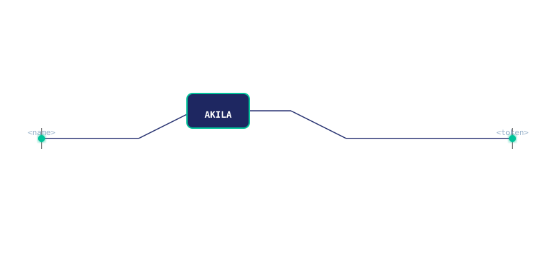

Your team is already using AI. AKILA ensures what they share stays confidential.
AKILA sits between your staff and the AI tools they already use — sanitizing sensitive data before it ever leaves your organization, then restoring it in the response.
How it works
Data sanitization in three stages
Your team sends a prompt. AKILA intercepts it, strips identifying information, forwards only placeholders to the AI provider, and restores the original data when the response returns.
Sanitized on your machine
Names, case numbers, financial figures, medical information — identified and replaced with non-reversible placeholders before anything leaves your network.
Processed by AI
The AI provider receives only placeholders. There is nothing sensitive to leak, retain, or train on.
Restored for your team
The response returns to your machine. Original values are restored for display. Your team sees a complete answer.
The record
When policy meets reality
These incidents were all public. In every case, a policy existed but couldn't be enforced technically until it was too late.
Engineers pasted confidential source code into ChatGPT. The company banned consumer AI tools company-wide after the fact.
A UK law firm found client matter details had been entered into ChatGPT by staff, despite an existing policy against it.
Restricted, then banned, consumer AI tools after employees were found inputting sensitive financial data.
Warned staff after ChatGPT's own output began reflecting internal, confidential Amazon documents.
Every organization had a policy. None had a technical safeguard.
Enterprise
A control every team can sign off on
Not just a compliance checkbox — a technical answer for the people who'll actually be asked about it.
| Without a technical safeguard | With AKILA |
|---|---|
| No visibility into what is shared with AI tools | Every interaction sanitized automatically, with an audit trail |
| Policy relies on staff remembering under deadline pressure | Protection is automatic — nothing to remember, nothing to forget |
| One mistake can create irreversible exposure | Sensitive data never reaches the AI provider in identifiable form |
| Compliance argument is "we told people not to" | Compliance argument is a demonstrable technical control |
| Banning AI pushes usage to personal, unmonitored devices | Sanctioned AI use stays protected on any device on the network |
Trusted by
Organizations handling confidential information
AKILA is deployed in production across professional services, healthcare, financial services, and enterprise legal teams.
Desktop Agent
One installer. Zero configuration. Automatic protection.
The AKILA Desktop Agent bundles the local sanitization server, manages the browser extension, and auto-starts on boot. Everything runs on your own machine.
Prefer a single command?
curl -fsSL https://Woka21.github.io/akila/install.sh | bash
Downloads, verifies (SHA-256), installs, and removes quarantine flags automatically.
Extension setup
Where your files live and how to access them
After installation, AKILA places its files in standard locations on your machine. Here's what gets installed and where to find it.
chrome://extensions → enable Developer mode → Load unpacked → select the akila-extension folder.
Browser extension
Location: ~/Library/Application Support/Akila/extension/ (macOS)
Windows: %LOCALAPPDATA%\Akila\extension\
Linux: ~/.local/share/Akila/extension/
After installation, open chrome://extensions, enable Developer mode, and click Load unpacked. Select the extension folder above.
Local server
Location: Runs automatically on http://localhost:8080
Status: Check curl http://localhost:8080/health for an OK response.
Logs: ~/Library/Application Support/Akila/logs/ (macOS)
The server starts automatically at login. No manual launch required.
Configuration
Config file: ~/Library/Application Support/Akila/config.yaml
Recognition rules: ~/Library/Application Support/Akila/rules/
Audit log: ~/Library/Application Support/Akila/audit.log
Edit config.yaml to adjust port, add custom PII patterns, or configure API providers.
Security
Confidentiality is structural, not optional
AKILA runs entirely on your infrastructure. We never see your data. We never store your tokens. We never log your prompts.
End-to-end processing
Detection, redaction, and restoration happen entirely on your machine. No network path is required for core functionality.
Audit trail
Every sanitization event is recorded with timestamps, user identifiers, and redaction counts — for compliance and incident review.


Schedule a technical walkthrough
Enter your details and we'll schedule a 30-minute technical session within one business day.
Onboarding
Your deployment checklist
Follow these steps to deploy AKILA in your environment. Progress is saved automatically between sessions.
Compatibility
Single integration across every AI interface
Works transparently with every major AI platform your team uses today.
What's new
AKILA release history
Every change, every fix, every improvement — in one place. The latest release is always at the top.
Loading changelog…
What's new
AKILA release history
Every change, every fix, every improvement — in one place. The latest release is always at the top.
Loading changelog…